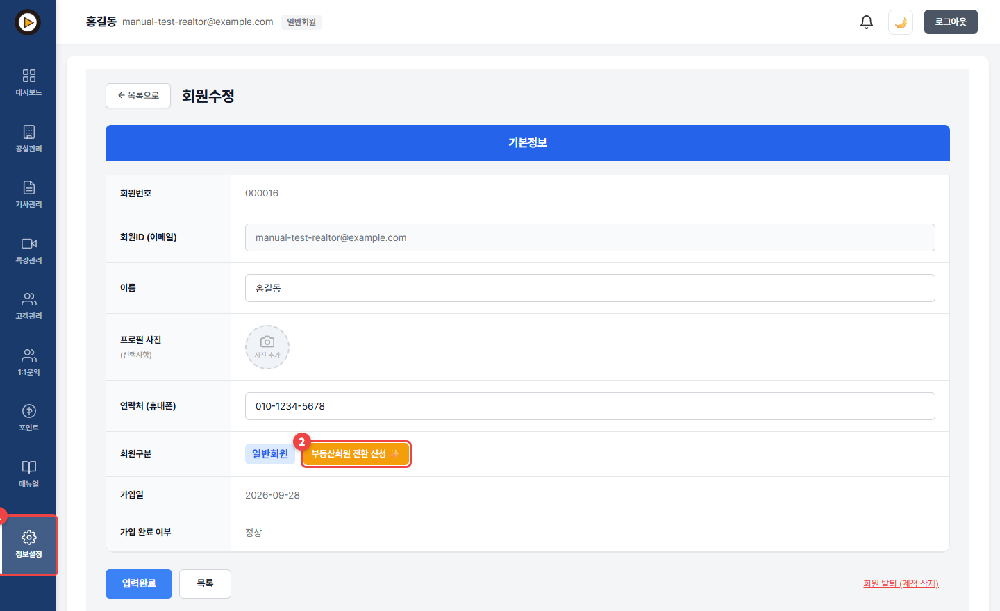
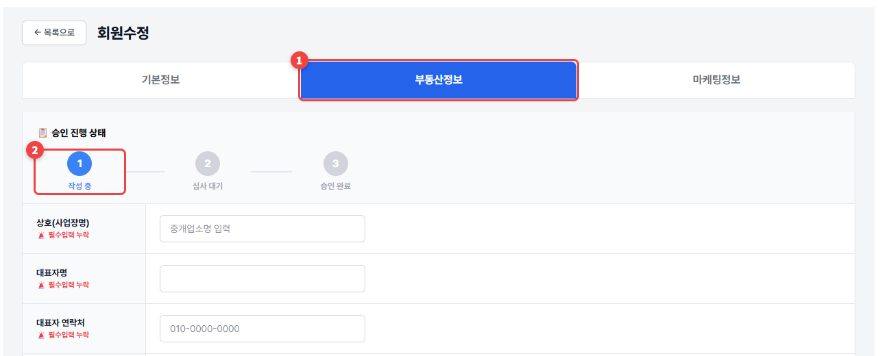
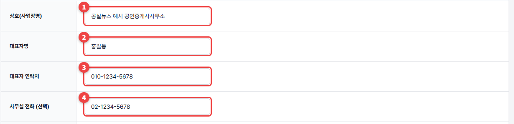
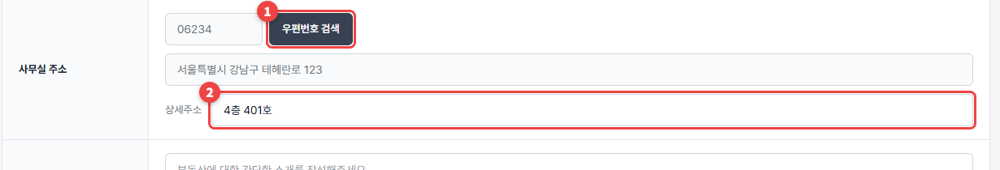
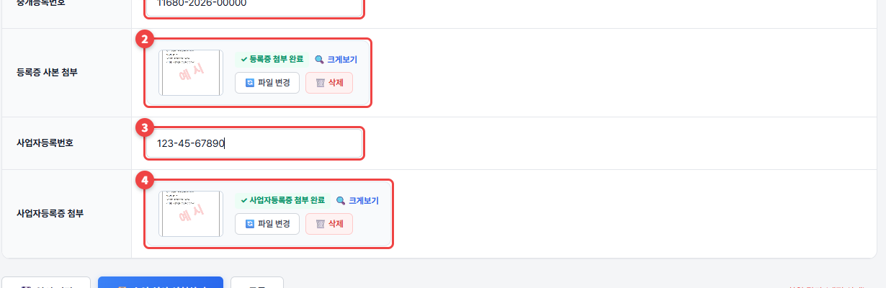
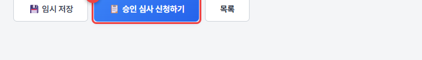

부동산회원 신청·서류 내기
사무소 정보와 서류 2가지(중개사무소 등록증, 사업자등록증)를 올리면 승인 심사가 시작됩니다.
📋 미리 준비하세요
- 중개사무소 등록증 사진 (휴대폰으로 찍은 사진도 됩니다)
- 사업자등록증 사진
1
관리자페이지 왼쪽 ① 정보설정에서 ② 부동산회원 전환 신청 ✨을 누르세요. "전환을 신청하시겠습니까?" 창이 뜨면 확인을 누르세요.

2
부동산정보 탭이 열립니다. 위쪽 승인 진행 상태가 지금 어디까지 왔는지 알려 줍니다. 지금은 작성 중입니다.

3
① 상호 ② 대표자명 ③ 대표자 연락처를 넣으세요. ④ 사무실 전화는 선택입니다.

4
① 우편번호 검색을 눌러 사무실 주소를 고르고 ② 상세주소(층·호수)를 넣으세요.

5
① 중개등록번호를 넣고 ② 중개사무소 등록증 사진을 올리세요. ③ 사업자등록번호를 넣고 ④ 사업자등록증 사진을 올리세요. 점선 상자를 누르면 사진을 고를 수 있습니다. 올라가면 "첨부 완료"가 표시됩니다.

6
맨 아래 승인 심사 신청하기를 누르세요. 확인 창이 뜨면 확인을 누르세요.

💡 알아두세요
- 다 못 채웠으면 임시 저장을 누르세요. 나중에 이어서 쓸 수 있습니다.
- 부동산 소개(100자 이내)는 선택입니다. 물건접수웹페이지 맨 아래에 나옵니다.
서류 사진이 흐리면 어떻게 되나요?
관리자가 글자를 읽을 수 없으면 서류 보완으로 돌아옵니다. 글자가 또렷하게 보이도록 밝은 곳에서 찍어 주세요.